Business Forecasting
Someone asks you how much a number moves when another number moves. That is the whole week.
You consult for Ecobici, the bike-share system in Mexico City.
Your client is planning for a warmer city. She has one question:
When the daily temperature goes up by one degree, how many more trips do we get?
She does not want “more”. She wants a number, in trips per degree, because she has to size the fleet against it.
bikes — 781 weekdays in Mexico City, 2017–2019.
| Column | What it is |
|---|---|
date |
the day |
trips |
Ecobici trips that day |
temp |
average temperature, °C |
pm25 |
fine-particle pollution |
weekday |
Monday … Friday |
friday |
1 if Friday, 0 otherwise |
Look at it before you model it.
Print the first ten rows of bikes. Then find the mean and standard deviation of bikes$trips and of bikes$temp.
bikes[1:10, ] prints rows 1 to 10. mean() and sd() take a single column, like bikes$trips.
Draw the scatterplot of bikes$trips against bikes$temp, then compute the correlation between them.
Put temperature on the horizontal axis — it is the variable your client controls her planning around.
plot(x, y) puts the first argument on the horizontal axis. cor(x, y, use = "complete.obs") gives the correlation.
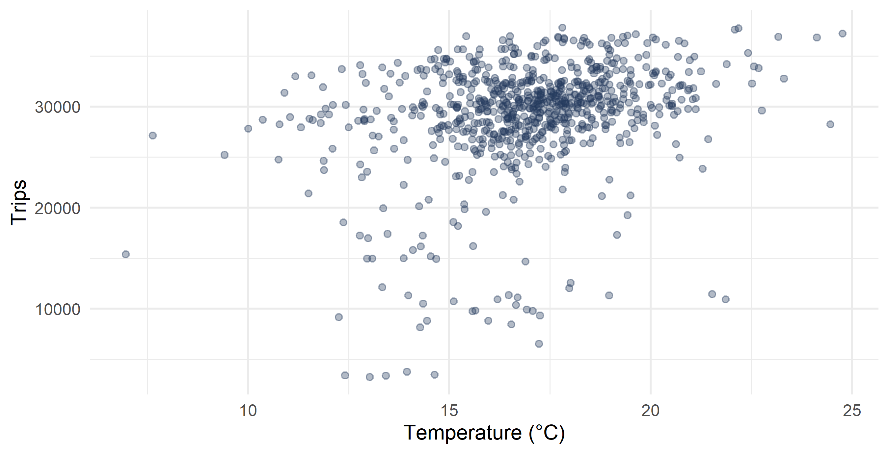
Correlation is unit-free. It is +0.297 whether you measure temperature in Celsius or Fahrenheit, trips in trips or in thousands of trips.
Your client needs an answer in trips per degree. That means putting a line through the cloud and reading its slope.
That line is the simple linear regression.
What we assume is true in the population, before we touch the data.
You have paired data \(\{(x_1,y_1), (x_2,y_2), \dots, (x_n,y_n)\}\).
We assume that in the population the two are linked by:
\[y_i = \cssId{mt-b0}{\beta_0} + \cssId{mt-b1}{\beta_1} \cssId{mt-xi}{x_i} + \cssId{mt-ui}{u_i}\]
| Symbol | Name | In the bike problem |
|---|---|---|
| \(y_i\) | dependent variable | trips on day \(i\) |
| \(x_i\) | regressor | temperature on day \(i\) |
| \(\beta_1\) | slope | extra trips per extra degree |
| \(\beta_0\) | intercept | trips at 0 °C |
| \(u_i\) | error | everything else |
\(\beta_0\) and \(\beta_1\) are parameters. They are fixed, unknown numbers that describe the whole population. We never see them.
What we can do is estimate them from a sample. Those estimates get hats: \(\hat{\beta}_0\) and \(\hat{\beta}_1\).
\[\beta_1 = \frac{\text{change in } y}{\text{change in } x}\]
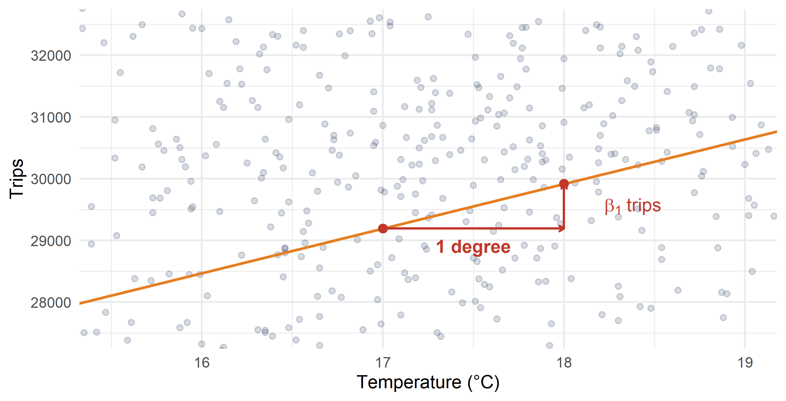
In each row, what does the slope actually buy the business?
| Setting | y | x | What β1 buys you |
|---|---|---|---|
| Labour | wage | years of schooling | the return to one more year of education |
| Retail | units sold | price | how much demand falls when you raise the price |
| Real estate | sale price | square metres | what one more square metre is worth |
| Marketing | sales | ad spend | pesos of sales per peso of advertising |
| Pharma | prescriptions written | gifts to physicians | whether the gifts pay for themselves |
Same model every time. Only the columns change.
Four conditions. They decide whether the line means anything.
Linear in the parameters, with an additive error. \(y_i = \beta_0 + \beta_1 x_i + u_i\) — not \(\beta_1^2\), not \(\beta_0 \cdot u_i\).
The error has mean zero: \(E(u_i) = 0\). On average the line is not too high or too low.
Constant variance: \(\text{Var}(u_i) = \sigma^2\). The scatter around the line is the same width everywhere. This is called homoskedasticity.
Errors are uncorrelated across observations: knowing one day’s error tells you nothing about the next day’s.
Assumptions 3 and 4 are the ones that fail in practice. W09 is about spotting that.
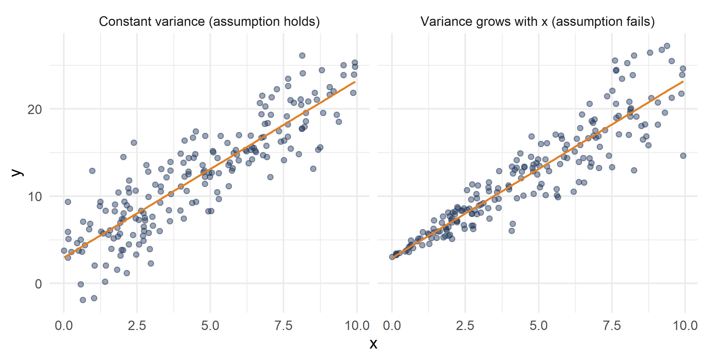
Infinitely many lines pass through a cloud of points. One of them is best. Which, and why?
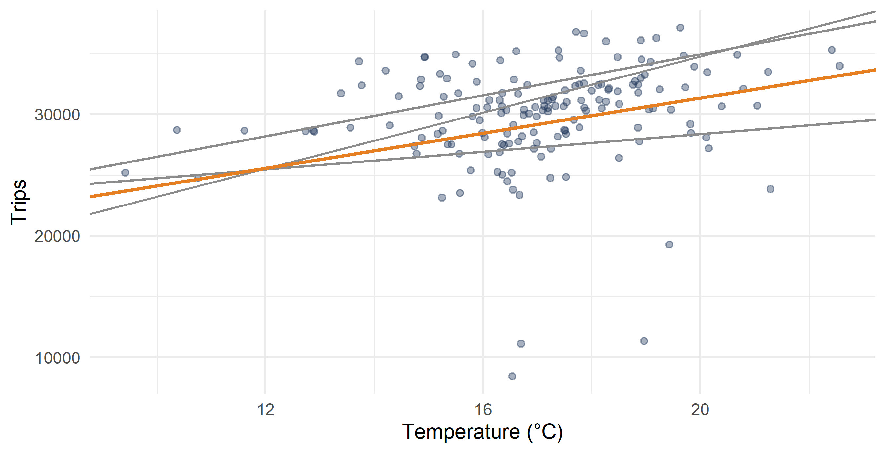
For a candidate line with intercept \(\hat{\beta}_0\) and slope \(\hat{\beta}_1\), the fitted value for day \(i\) is what the line predicts:
\[\hat{y}_i = \hat{\beta}_0 + \hat{\beta}_1 x_i\]
The residual is how wrong the line was that day:
\[\hat{u}_i = \cssId{mt-yi}{y_i} - \cssId{mt-yhat}{\hat{y}_i}\]
A residual is vertical distance: observed minus predicted. Positive means the day beat the line.
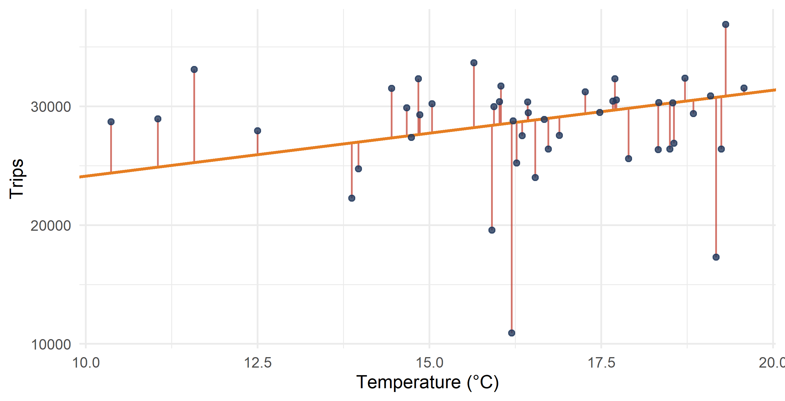
Move the two sliders. The red segments are the residuals; the number below is the sum of their squares. Get it as low as you can.
No matter how carefully you moved them, you could not get below 467.4. Every other line scores higher.
That minimum is not a coincidence, and you do not have to search for it — there is a formula that lands on it directly.
We cannot just add the residuals — the positive and negative ones cancel. So we square them first, then add:
\[\min_{\hat{\beta}_0,\, \hat{\beta}_1} \; \cssId{mt-ssemin}{\sum_{i=1}^{n} \hat{u}_i^2} \;=\; \min_{\hat{\beta}_0,\, \hat{\beta}_1} \; \sum_{i=1}^{n} \left( y_i - \hat{\beta}_0 - \hat{\beta}_1 x_i \right)^2\]
This is ordinary least squares — OLS. The line that minimises this sum is the regression line.
Minimising gives closed-form answers. The slope:
\[\hat{\beta}_1 = \frac{\cssId{mt-covxy}{\sum (x_i - \bar{x})(y_i - \bar{y})}}{\cssId{mt-varx}{\sum (x_i - \bar{x})^2}}\]
And the intercept:
\[\hat{\beta}_0 = \bar{y} - \hat{\beta}_1 \bar{x}\]
The intercept formula says the line always passes through the point \((\bar{x}, \bar{y})\) — the centre of the cloud. See the algebra.
Divide the top and bottom of \(\hat{\beta}_1\) by \(n-1\) and it becomes a ratio you already know:
\[\hat{\beta}_1 = \frac{\text{Cov}(x, y)}{\text{Var}(x)}\]
Or, written with the correlation:
\[\hat{\beta}_1 = \text{Cor}(x, y) \cdot \frac{\text{sd}(y)}{\text{sd}(x)}\]
The second form says it plainly: the slope is the correlation, converted into the units of the problem. That is exactly what your client needed and correlation alone could not give her.
Compute \(\hat{\beta}_1\) for bikes$trips on bikes$temp without using lm, using the covariance-over-variance formula. Then compute \(\hat{\beta}_0\).
cov(x, y, use = "complete.obs") and var(x, na.rm = TRUE) are both on the sheet. Name the slope something like b1 so you can reuse it on the next line.
Get the same slope a second way: correlation times the ratio of standard deviations. Do the two numbers agree?
cor(x, y, use = "complete.obs") and sd(x, na.rm = TRUE). Watch which standard deviation goes on top — it is the one for the variable on the vertical axis.
Fit the regression of bikes$trips on bikes$temp with lm, store it in reg, and print reg.
The form is lm(y ~ x, data = df). The ~ reads as “depends on”.
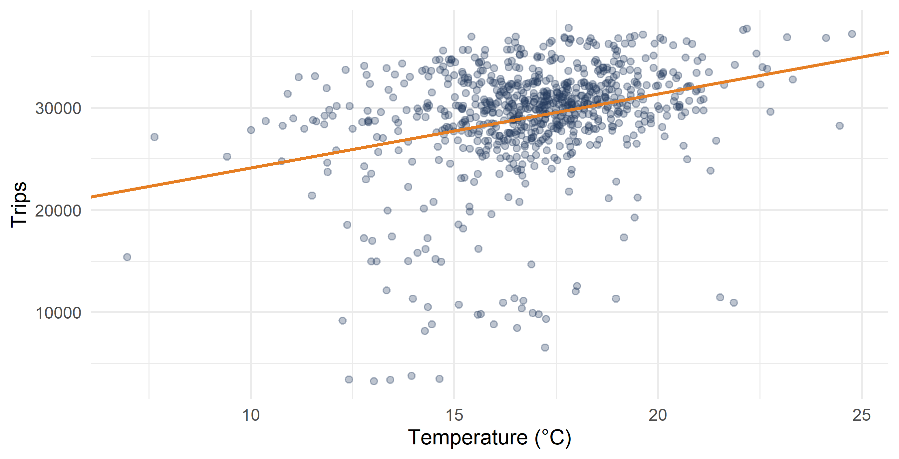
\[\widehat{\text{trips}} = 16{,}893 + 723.6 \times \text{temp}\]
A one-degree warmer day brings about 724 more trips.
And the intercept? It says a 0 °C day would see 16,893 trips. Mexico City never sees 0 °C — the coldest day here is 7 °C. The intercept is where the line would cross, not a prediction anyone should make.
Reporting an intercept far outside the range of your data is one of the most common ways to sound confident and be wrong.
summary() prints eight things. This week we need two of them.
Run summary() on your fitted model. Find the two coefficients you computed by hand.
summary(reg).
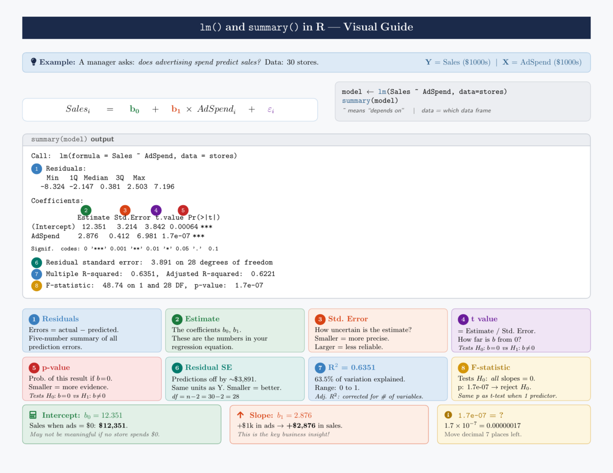
This week you read the Estimate column and the R-squared line. That is estimation and interpretation.
Next week the other three columns — Std. Error, t value, Pr(>|t|) — become the subject. They answer a different question: given that the slope is 723.6 in this sample, how sure are we that it is not zero in the population?
Do not read them yet. Build them first — that is W08.
Two things the model hands back for every day in the data:
Both are on the exam sheet, and both are vectors as long as the data.
Using your fitted reg:
residuals(reg) > 0 gives TRUE/FALSE. The mean of a TRUE/FALSE vector is the share that are TRUE.
About 60% of days are above the line, but the histogram has a long tail on the left — a handful of days collapsed far below what temperature predicted. Those are holidays and strike days. The line cannot see them.
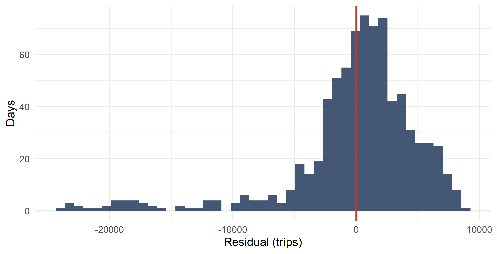
A slope can be real and still leave most of the story untold.
Total variation in \(y\) splits cleanly in two:
\[\underbrace{\sum (y_i - \bar{y})^2}_{\cssId{mt-sst}{SST}} = \underbrace{\sum (\hat{y}_i - \bar{y})^2}_{\cssId{mt-ssr}{SSR}} + \underbrace{\sum (y_i - \hat{y}_i)^2}_{\cssId{mt-sse}{SSE}}\]
Every bit of variation in \(y\) is either explained by the line or left in the residuals. Nothing goes missing.
Left: how far each point sits from the mean. Middle: how much of that the line accounts for. Right: what is left over.
\[R^2 = \frac{SSR}{SST} = 1 - \frac{SSE}{SST}\]
anova(reg) prints the pieces directly — that is what it is for.
Run anova(reg). Read SSR and SSE out of the Sum Sq column, then build \(R^2\) from them.
Store it first: a <- anova(reg). Then a[1, 2] is the regression sum of squares and a[2, 2] is the residual sum of squares. SST is the two added together.
With one regressor, \(R^2\) is the squared correlation. Check it: square the correlation between bikes$temp and bikes$trips and compare with what you just got.
^2 squares a number. This shortcut works only with a single regressor.
Temperature explains under nine percent of the day-to-day variation in Ecobici trips.
The slope is still real and still useful: 724 trips per degree is what the client plans against. But 91% of what moves ridership is something else — the day of the week, rain, holidays, a metro closure.
A low \(R^2\) does not mean the slope is wrong. It means the line is not the whole story. Those are different claims, and confusing them is a classic exam trap.
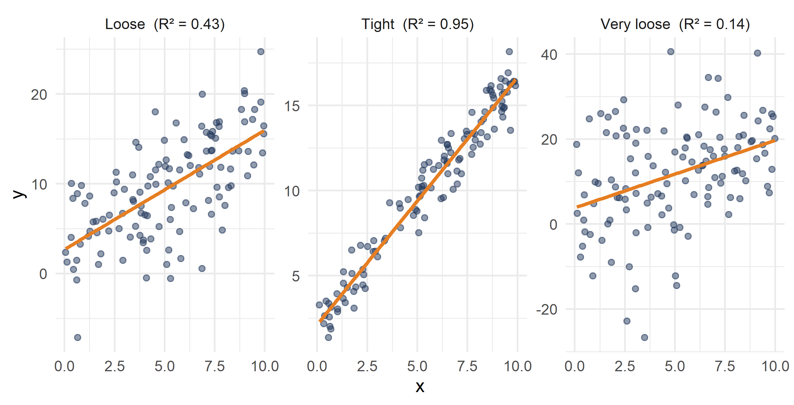
All three have the same slope. Only the scatter differs.
Your client reports in thousands. Your colleague works in Fahrenheit. Does the answer change?
You estimated a regression in pesos per hour of training. You now have to present it to a client in New York who thinks in dollars.
Do you have to re-estimate? Or can you convert the coefficients you already have?
Rescale \(x\) to \(z = ax + c\) and \(y\) to \(y' = by + d\). Then:
\[\hat{\beta}'_1 = \text{Cor}(z, y') \cdot \frac{\text{sd}(y')}{\text{sd}(z)} = \text{Cor}(x, y) \cdot \frac{b \cdot \text{sd}(y)}{a \cdot \text{sd}(x)} = \frac{b}{a}\,\hat{\beta}_1\]
Three things fall out:
\[\hat{\beta}'_0 = b\,\hat{\beta}_0 + d - \frac{b}{a}\,\hat{\beta}_1 c\]
Grey is the original data, black is the rescaled data. The dashed line is the original fit, the solid line is fitted to the rescaled data.
The green line under the plot is the formula’s prediction. It never disagrees with the refitted number.
Your client wants trips reported in thousands. Make a new column bikes$trips_k equal to bikes$trips divided by 1000, regress it on bikes$temp, and compare the slope with the original 723.55.
Predict the answer before you run it.
Here \(y\) is multiplied by \(b = 1/1000\) and \(x\) is untouched, so \(a = 1\).
A colleague in Chicago wants temperature in Fahrenheit: \(F = 1.8 \times C + 32\).
Build bikes$temp_f, regress bikes$trips on it, and check the slope against the rule \(\hat{\beta}'_1 = (b/a)\hat{\beta}_1\).
Here \(a = 1.8\) and \(c = 32\), while \(y\) is untouched so \(b = 1\). Predict \(723.55 / 1.8\) before you run it.
What if x is not a number, but a yes-or-no?
A dummy (or binary) variable takes only two values:
\[x_i = \begin{cases} 1 & \text{if the condition is true} \\ 0 & \text{otherwise}\end{cases}\]
Examples:
Regress \(y_i\) on a dummy \(x_i\). The estimates collapse to something very simple:
\[\hat{\beta}_0 = \bar{y}_{\,x=0} \qquad \text{the mean of } y \text{ in the } 0 \text{ group}\]
\[\hat{\beta}_1 = \bar{y}_{\,x=1} - \bar{y}_{\,x=0} \qquad \text{the difference in group means}\]
Which makes sense: “a one-unit increase in \(x\)” is the only move available — it means switching from the 0 group to the 1 group.
bikes$friday is 1 on Fridays and 0 on other weekdays.
bikes$trips on Fridays and on non-Fridays separately.bikes$trips on bikes$friday.Before you run step 2: what do you expect the intercept and the slope to be?
Subset with brackets: bikes$trips[bikes$friday == 0] is trips on non-Fridays.
Non-Fridays average 29,410.2 trips, Fridays 28,209.5.
The regression returns intercept 29,410.2 and slope −1,200.6 — the non-Friday mean, and the gap. The regression is not doing anything new here; it is a difference in means, computed by a different route.
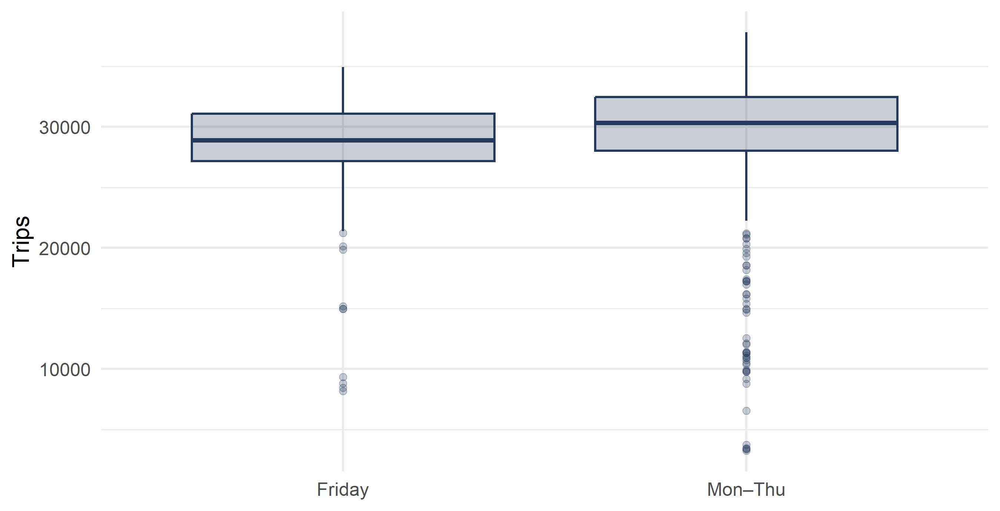
Now flip it. What if y is the yes-or-no?
You work at Amazon. You want to predict whether a customer returns a product, from its star rating.
\[y_i = \begin{cases} 1 & \text{if customer } i \text{ returns product } i \\ 0 & \text{if they keep it}\end{cases}\]
And you run the ordinary regression anyway:
\[y_i = \beta_0 + \beta_1 x_i + u_i\]
where \(x_i\) is the rating, from 0 to 5.
This is called the linear probability model. Does it mean anything?
A regression predicts the expected value of \(y\) given \(x\):
\[E(y \mid x) = \beta_0 + \beta_1 x\]
The expected value of a variable is its mean. And for a 0/1 variable, the mean is just the proportion of 1s.
So \(E(y \mid x)\) is the share of products with rating \(x\) that get returned — which is exactly the probability of return at that rating.
If \(\hat{y} = 0.15\) for a five-star product, read it as a 15% chance of being returned.
\(\beta_1\) is the change in the probability of \(y = 1\) when \(x\) rises by one unit.
If the return probability is 27% at four stars and 15% at five stars:
\[\hat{\beta}_1 = 0.15 - 0.27 = -0.12\]
Each extra star cuts the chance of a return by 12 percentage points.
Say percentage points, not percent. Going from 27% to 15% is a fall of 12 percentage points, and also a fall of about 44 percent. Those are different numbers and graders notice.
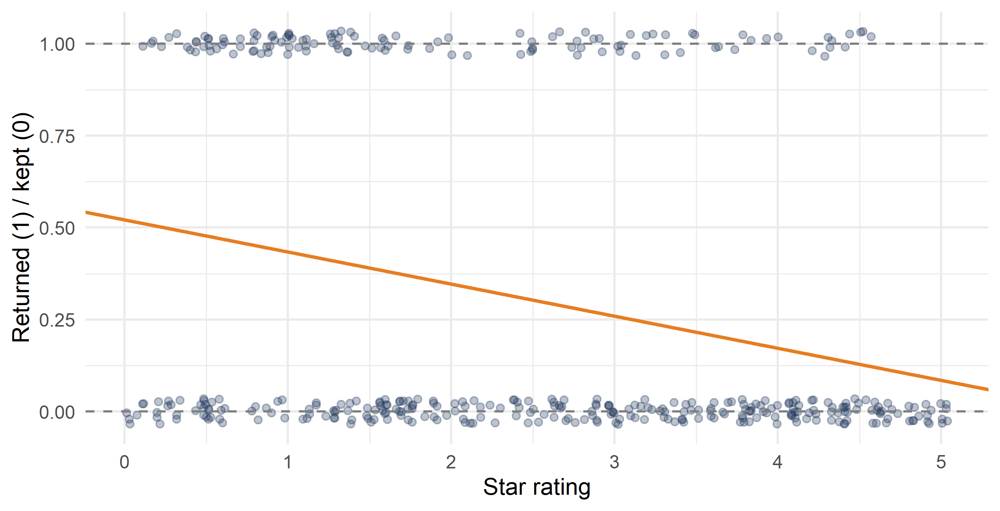
The limitation: OLS can predict outside \([0, 1]\), which is nonsense for a probability. In practice people move to logit or probit models, which are non-linear and stay inside the band.
Why we still teach it: the coefficient reads directly as a change in probability, in percentage points. A logit coefficient does not. For a first look at a binary outcome, the linear probability model is simple and honest about what it is.
lm.Estimate column and the \(R^2\) off summary().anova() and build \(R^2\).Next week: the same regression, but asking how sure we are — standard errors, t-statistics, p-values, confidence intervals and prediction intervals.
Problems from this week’s set. ← Back to the summary
P2 #1
Take a sample \(\{(x_i, y_i)\}_{i=1}^{n}\) where \(x\) and \(y\) are both standardised — each has mean 0 and standard deviation 1. Their sample correlation is \(r_{xy} = 0.5\).
For the model \(y_i = \alpha + \beta x_i + e_i\), what are the least-squares estimates \(\hat{\alpha}\) and \(\hat{\beta}\)?
Work it from the formulas first. Then build a small standardised sample in the cell and confirm.
Use \(\hat{\beta} = \text{Cor}(x,y) \cdot \text{sd}(y)/\text{sd}(x)\) and \(\hat{\alpha} = \bar{y} - \hat{\beta}\bar{x}\). What are \(\text{sd}(y)\), \(\text{sd}(x)\), \(\bar{x}\) and \(\bar{y}\) here?
Both standard deviations are 1, so
\[\hat{\beta} = r_{xy} \cdot \frac{1}{1} = 0.5\]
Both means are 0, so
\[\hat{\alpha} = 0 - 0.5 \times 0 = 0\]
With standardised variables the slope is the correlation, and the intercept is zero. Confirming in R:
P2 #9
A regression predicts the shelf life of an apple from its weight. For one apple the predicted shelf life is 4.6 days and the residual is −0.6 days.
Did the model over-estimate or under-estimate that apple’s shelf life? What was the apple’s actual shelf life?
The residual is defined as observed minus predicted, not the other way round.
P2 #3
hrs holds 6,052 non-married individuals aged 50+. outofpocket_costs is annual out-of-pocket medical spending in 2000; age is age in years; male is 1 for men.
lm and store it in hrs_results.Subset with brackets: hrs[hrs$male == 1, ] is the men. For the share of negative fitted values, mean(fitted(hrs_results) < 0).
P2 #7, P2 #8
Answer both from the definitions — no data needed.
Generate y <- 2 + 0.8 * x + rnorm(n, 0, s) for a small s and a large s, then fit both. Repeat with a different seed and watch which slope moves more.
The algebra behind the results in the main flow.
We minimise
\[S(\hat{\beta}_0, \hat{\beta}_1) = \sum_{i=1}^{n}\left(y_i - \hat{\beta}_0 - \hat{\beta}_1 x_i\right)^2\]
Take the derivative with respect to \(\hat{\beta}_0\) and set it to zero:
\[\frac{\partial S}{\partial \hat{\beta}_0} = -2\sum \left(y_i - \hat{\beta}_0 - \hat{\beta}_1 x_i\right) = 0\]
Divide by \(-2n\):
\[\bar{y} - \hat{\beta}_0 - \hat{\beta}_1 \bar{x} = 0 \quad \Longrightarrow \quad \hat{\beta}_0 = \bar{y} - \hat{\beta}_1\bar{x}\]
That is the intercept, and it shows the line runs through \((\bar{x}, \bar{y})\).
Now the slope:
\[\frac{\partial S}{\partial \hat{\beta}_1} = -2\sum x_i\left(y_i - \hat{\beta}_0 - \hat{\beta}_1 x_i\right) = 0\]
Substitute \(\hat{\beta}_0 = \bar{y} - \hat{\beta}_1\bar{x}\) and rearrange:
\[\hat{\beta}_1 = \frac{\sum (x_i - \bar{x})(y_i - \bar{y})}{\sum (x_i - \bar{x})^2}\]
With \(z = ax + c\) and \(y' = by + d\), we already have \(\hat{\beta}'_1 = (b/a)\hat{\beta}_1\). Then:
\[\begin{aligned} \hat{\beta}'_0 &= \bar{y}' - \hat{\beta}'_1 \bar{z} \\ &= (b\bar{y} + d) - \left(\frac{b}{a}\hat{\beta}_1\right)(a\bar{x} + c) \\ &= b\bar{y} + d - b\hat{\beta}_1\bar{x} - \frac{b}{a}\hat{\beta}_1 c \\ &= b\left(\bar{y} - \hat{\beta}_1\bar{x}\right) + d - \frac{b}{a}\hat{\beta}_1 c \\ &= b\,\hat{\beta}_0 + d - \frac{b}{a}\hat{\beta}_1 c \end{aligned}\]
Suppose we force the line through zero:
\[y_i = \beta_1 x_i + u_i\]
Minimising \(\sum (y_i - \hat{\beta}_1 x_i)^2\) gives
\[\hat{\beta}_1 = \frac{\sum x_i y_i}{\sum x_i^2}\]
Note this is not the usual estimator — the deviations from means are gone.
If the true line does not pass through the origin and you use this anyway, the slope absorbs the missing intercept and is biased. Forcing a line through zero is a strong claim about the world, not a simplification.
summary() output
Call:
lm(formula = trips ~ temp, data = bikes)
Residuals:
Min 1Q Median 3Q Max
-24010.5 -1508.4 774.5 2920.5 8900.2
Coefficients:
Estimate Std. Error t value Pr(>|t|)
(Intercept) 16892.66 1427.32 11.835 <2e-16 ***
temp 723.55 83.37 8.679 <2e-16 ***
---
Signif. codes: 0 '***' 0.001 '**' 0.01 '*' 0.05 '.' 0.1 ' ' 1
Residual standard error: 5302 on 779 degrees of freedom
Multiple R-squared: 0.08817, Adjusted R-squared: 0.087
F-statistic: 75.32 on 1 and 779 DF, p-value: < 2.2e-16Columns two, three and four are W08.
← Back to This week and next week